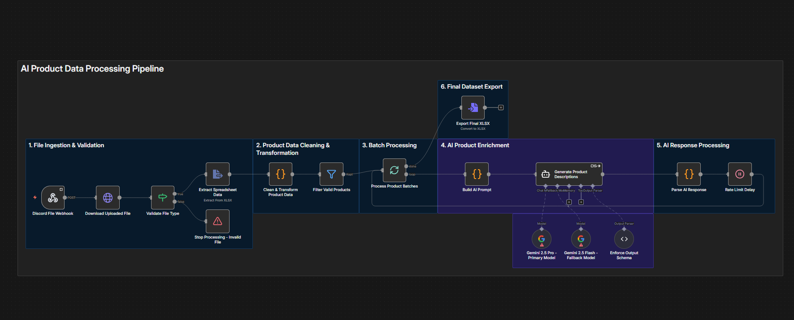

CenoMetr - Apartment Price Prediction
Python - End-to-end apartment price prediction pipeline built on 45,756 Otodom listings from 20 Polish cities. Includes Selenium data collection, feature engineering, model comparison, cross-validation, hyperparameter tuning, and CLI deployment. The selected Random Forest achieved R² ≈ 0.75 and MAPE ≈ 16%.

CRM-ERP Reconciliation Pipeline
Python - ETL reconciliation pipeline comparing CRM deals with ERP orders from CSV and REST API sources. Includes validation, currency normalization, discrepancy classification, MySQL upserts, audit logging, retry logic, and scheduled execution.

E-Commerce Warehouse KPI Analysis
MySQL - Warehouse KPI analysis across 45,000 records and 9 relational tables, covering Return Rate, Lead Time, Order Cycle Time, Fill Rate, and Cost per Shipment. Uses joins, CTEs, window functions, and date analysis to identify operational inefficiencies and an estimated 10,800 PLN in annual carrier savings.

AI Product Data Processing Pipeline
n8n - Automated product data and AI enrichment pipeline combining XLSX validation, transformation, batch processing, Google Gemini integration, structured output validation, and final dataset export. The original implementation generated 2,800+ product descriptions and reduced manual processing time by 75%.

Tile Store Data Analysis
Excel - RFM customer segmentation of 245 customers using recency, frequency, and monetary value. Pivot Tables and dynamic scoring classify customers into behavioral groups such as Best, Loyal, Need Attention, and At Risk to support retention and customer value analysis.

Plant Co. Sales Performance - KPI Dashboard
Power BI - Interactive performance dashboard tracking sales, quantity, and gross profit with dynamic YTD vs PYTD comparisons. Uses DAX time intelligence, metric switching, waterfall charts, treemaps, and scatter plots to identify underperforming markets and profitability patterns.